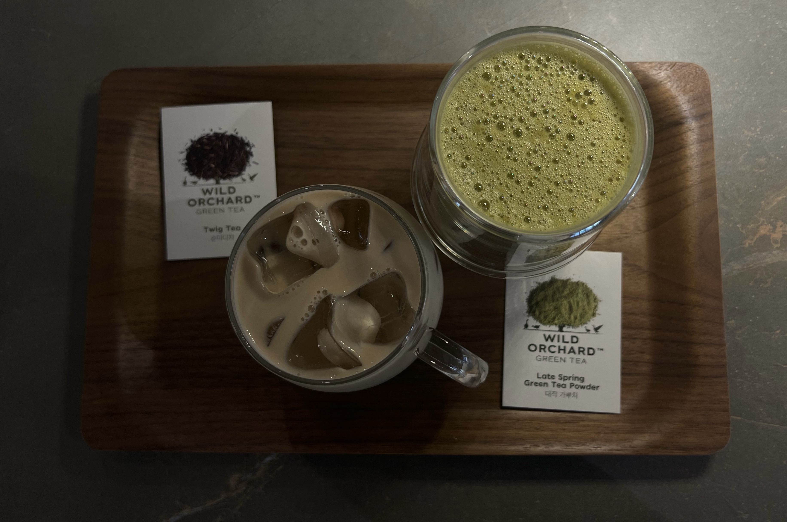

The Best Matcha Latte Recipe
Using 100% of the Green Tea Leaves
By Esther Hur

Ingredients:
- Organic matcha powder ('Wild Orchard' organic brand recommended)
- Brewed and leftover tea leaves (freshly brewed recommended)
- Dash of hot (but not boiling) water
- Milk of choice
- Organic maple syrup
Let's barista it up:
- Scoop a gracious spoonful of matcha powder into a cup and whisk together (with matcha whisk or spoon) with a dash of hot water until no chunks and foamy
- In the blender, blend together 2 big spoons of brewed tea leaves, matcha blend, 2 cups of milk, and 2-3 tablespoons of maple syrup
- Pour blended drink into two cups of ice
- Ponder the depths of your life as you sip on this health in a cup
Back to Top